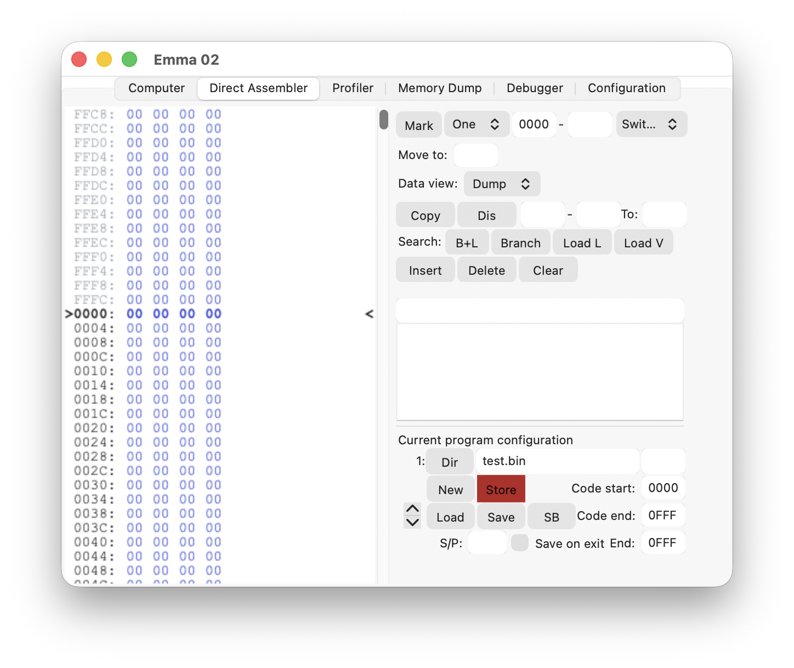
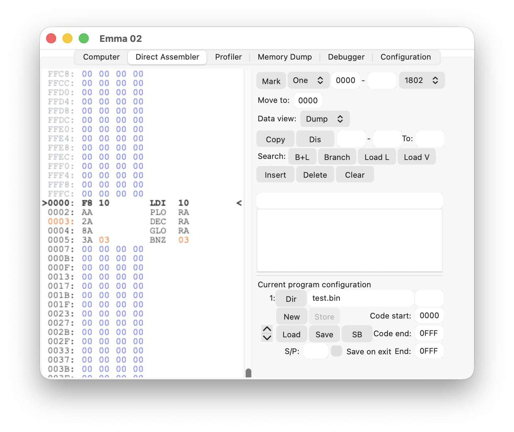
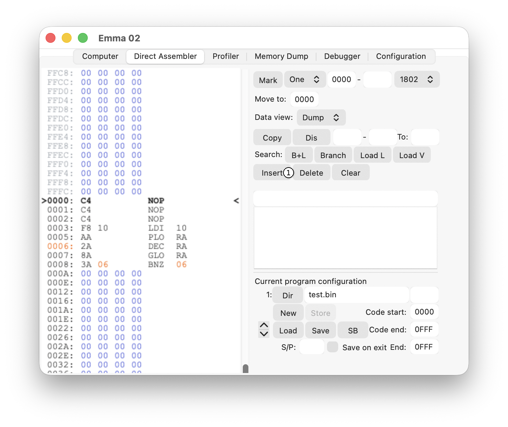
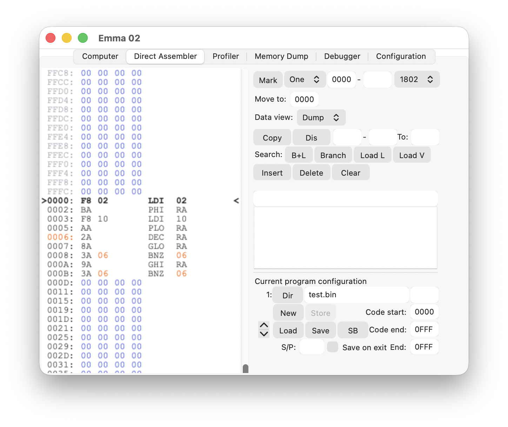
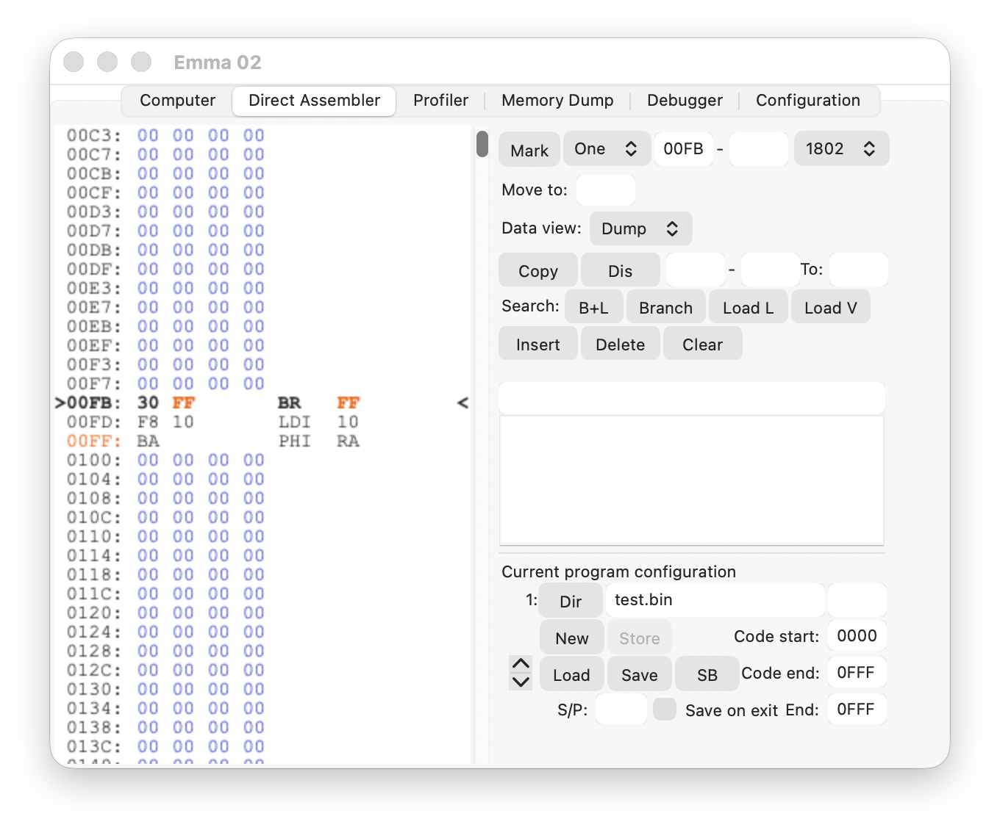
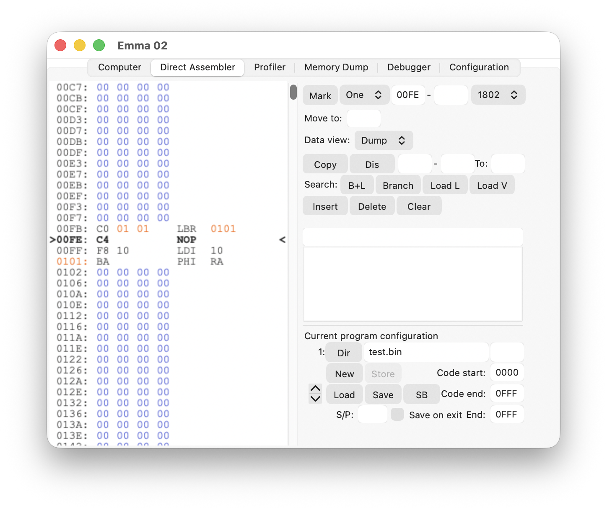
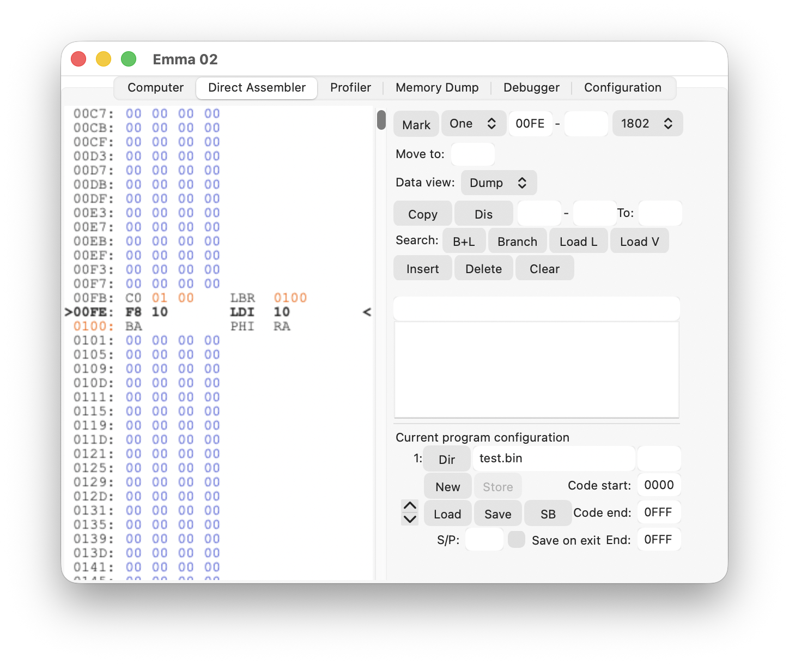

This section gives a simple example of how to use the program configuration in the Direct Assembler. It will also show the basics for the insert and delete functions. See the Direct Assembler section.
To get started:

Now press the red Store button.
Your configuration is ready!
Note: On Windows and Linux the Store button will have red text.
Write some code, for example a short counter going down from 10 (hexadecimal) to 0:

After writing this counter, you realise you need to make the counter larger, i.e., greater than FF (hexadecimal), say 110 (hexadecimal).

To do this, go to address 0 and press the Insert button (1) three times. When doing that, also look at what happens to the BNZ 03 code. It will change on every insert!
After the three inserts, you have room to add: LDI 02 / PHI RA on address 0000 (hexadecimal) and 0002 (hexadecimal). Also add a check on RA.1 at the end to get:

Delete works the same way: it deletes the current instruction and updates all branches accordingly.
The reason to define program boundaries is so that the assembler knows which parts of memory to check for branches. In the above example, addresses 0000 (hexadecimal) to 1000 (hexadecimal) will be checked.
Another useful feature of the insert and delete functions is that all short branches are converted to long branches if needed and if possible. Also, the assembler will convert long branches to short branches where possible.
To see how this works, write something like:

Insert at address 00FD (hexadecimal); the BR FF will change to an LBR 0101.
The Direct Assembler inserts a NOP at 00FD (hexadecimal) and also expands the BR to an LBR, adding an extra byte.

The same will happen with Delete: if an LBR is no longer needed, it will be replaced by a BR.
Note: In the example above, deleting the NOP on 00FE (hexadecimal) will not cause the LBR to change to a BR. The LBR will still be to 0100 (hexadecimal), which means a BR does not fit. An extra delete, for example on 00F5 (hexadecimal), would change the LBR to a BR.

Use the Save button on the Direct Assembler tab to save all debug data. This will save test.bin, test.debug, and the configuration files. The .debug file includes information about where branches and code are located. The .config file includes information about the specified configuration.
The whole configuration can be loaded back with Load. See the Program Configuration section.
To load all SB FW configuration and debug data, press the SB button when starting a COMX with the SB active. The SB configuration has a complex structure, consisting of fifteen parts to handle the different ROM locations as well as different banks.